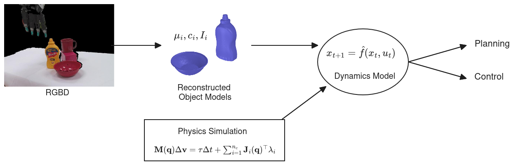
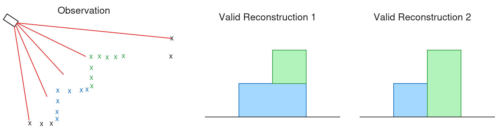

TBD
The high level aspiration is to take observations of a scene, then infer object models, which can then be combined with a physics simulator to create a dynamics model that we can use for planning and control. Here is a picture of the idea:

In this proposed project, we want to focus on how to do the reconstruction part. In order for the above setup to work, we need to have physically accurate reconstructed object models. The other thing to note about reconstruction, is that the problem of mapping a partial view to a full 3D geometry is underdetermined; there could be multiple valid reconstructions for the same observation. A classic example is a mug with the handle occluded. It should also be noted that in scenes with multiple objects, the distribution of valid reconstructions is interdependent. Consider this simple 2D example:

The idea is that the occlusion creates a distribution of possible reconstructions per object, and interpenetration constraints create interdependence between those distributions. This suggests that we ought to have a reconstruction method that is (a) able to reason about contact; and (b) able to accurately capture the probabilistic/distributional nature of the problem. While the eventual pipeline would involve reconstruction in a feedback loop, this proposal focuses on the initial reconstruction, before any interactions happen. This makes the problem simpler, and also has the ability to make reconstruction in the feedback loop and planning more efficient by having a good starting point if done properly. For the initial guess, we can assume that a scene is static; the net force is 0.
To put it simply, the proposal is A method for multi-object reconstruction of a static/stable scene that probabilistically reasons about contact.
Physical Priors:
Diverse Reconstructions: There is quite a few papers here. I will mention a select few:
We would phrase the problem as a Bayesian inference problem. Letting m be our objects model, o be the camera observation, F_\text{net} = 0 denote a static scene, and assuming independence:
P(m | o, F_\text{net} = 0) \propto P(o | m) P(F_\text{net} = 0 | m) P(m)